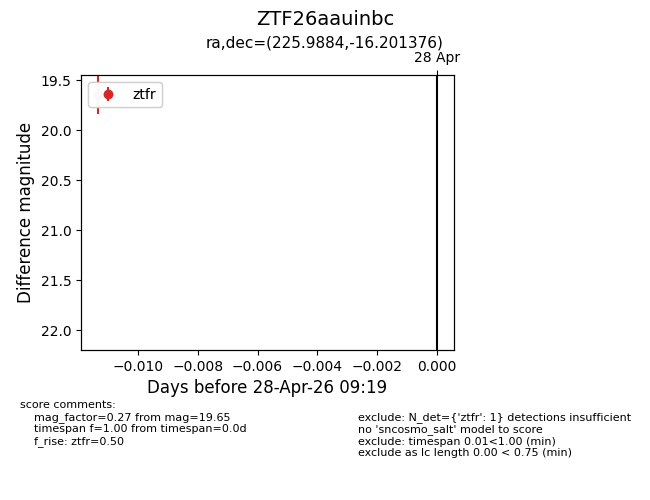
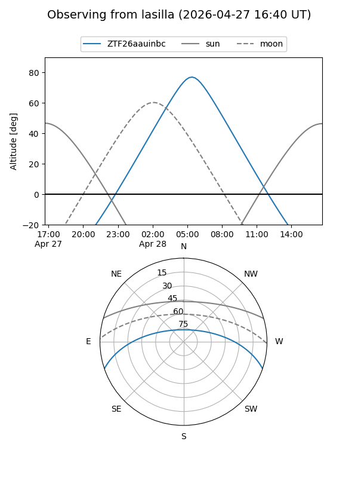
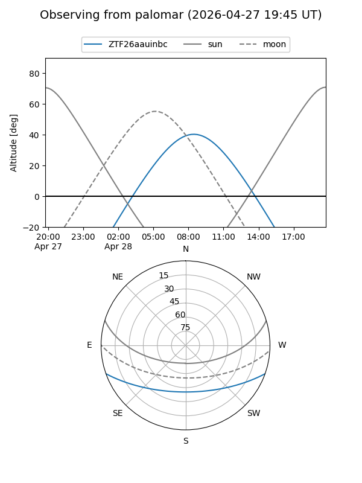

ZTF26aauinbc
Target ZTF26aauinbc at 2026-04-28 09:20
Aliases and brokers:
FINK: link
Lasair: link
ALeRCE: link
alt names
ZTF26aauinbc (ztf,fink_ztf)
Coordinates:
equatorial (ra, dec) = 225.9884,-16.20138
equatorial (HMS+DMS) = 15:03:57.22,-16:12:04.95
galactic (l, b) = (343.4076,+36.04989)
Flags:
Photometry:
last ztfr=19.65
1 ztfr detections
Lightcurve

Visibility


Additional plots